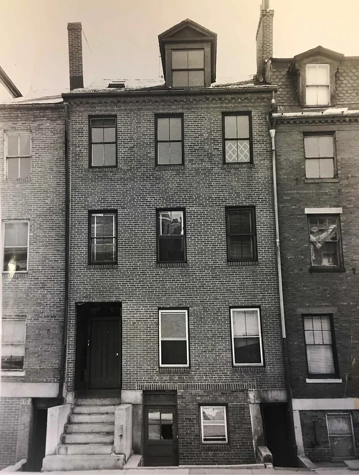
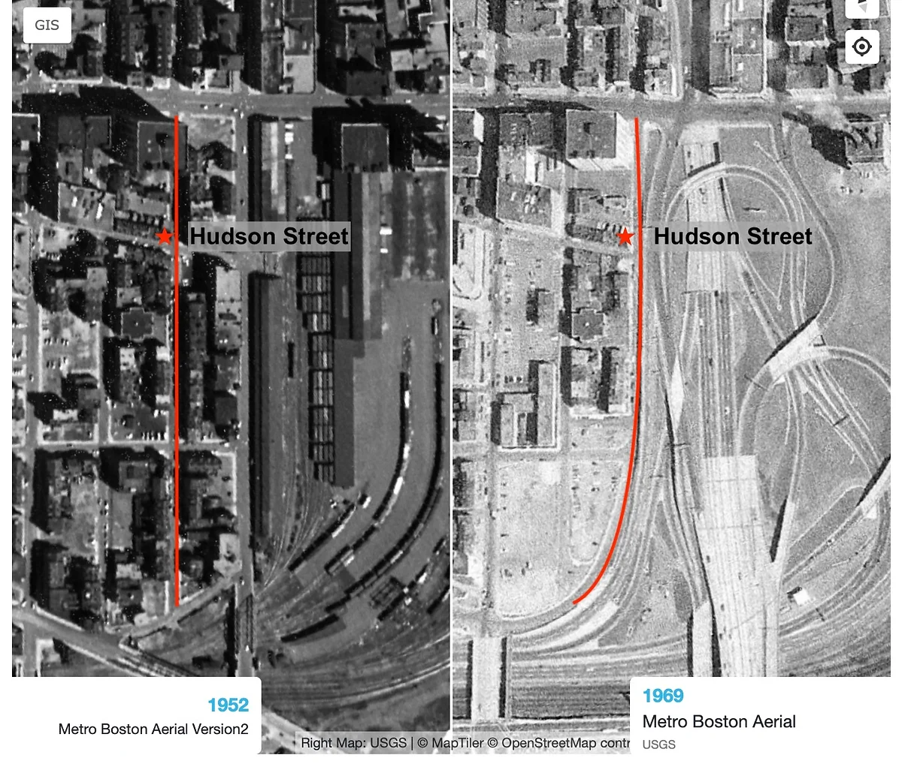
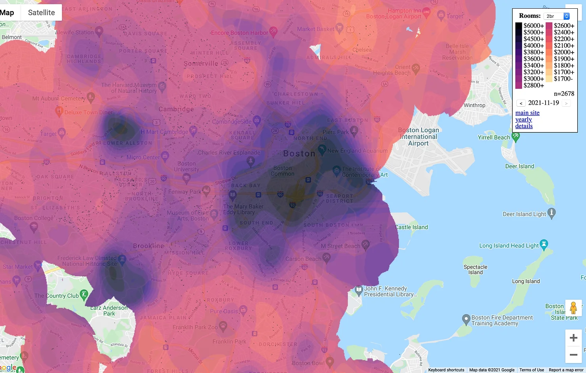
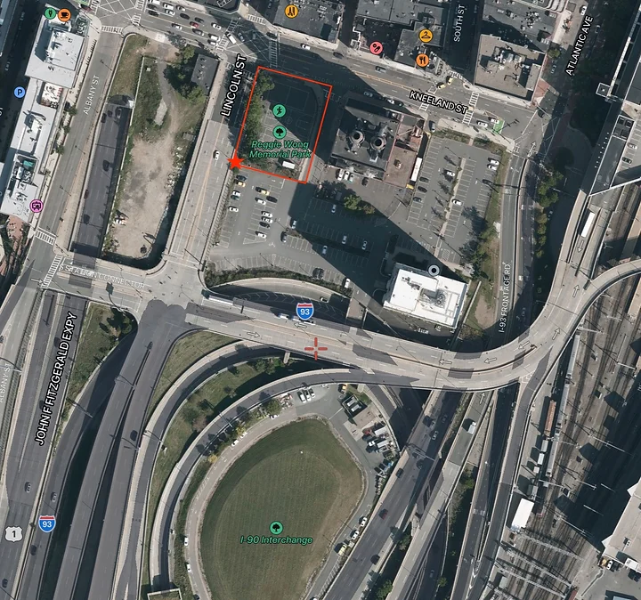
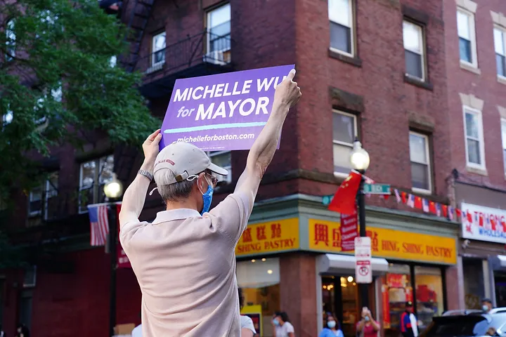

Cynthia Yee’s childhood home on 116 Hudson Street. Courtesy of Cynthia Yee
Born and raised in a row house on Chinatown's Hudson Street in the 1950s, Cynthia Yee calls her childhood "a paradise." Fathers worked in the same restaurant; mothers sewed together in the same factory. Yee and her friends shared bicycles and played rope on the street.
Yee’s carefree days in the thriving Hudson Street community quickly came to an abrupt end. In 1962, the construction of the Massachusetts Turnpike and I-93 highways displaced approximately 1,200 residential units in the neighborhood. Yee’s Hudson family house was seized and demolished—along with the entire East side of Hudson Street.
Aerial map of Hudson Street and Mass Turnpike in 1952 (left) and 1969 (right). Historical maps from Boston Planning & Development Agency. Visualization: Cynthia Tu
Yee’s family relocated to an apartment few blocks away from Chinatown, right next to the adult entertainment district in downtown Boston. In her blog Hudson Street Chronicles, Yee documents the transition from the jolly Hudson Street to a clamorous red-light district, where sex workers and police officials strolled around her house every night. “It was like going from heaven to hell,” she recalls.
Yee’s childhood story reflects the plight of the Chinese immigrant community during Boston’s urban development in the last century. After 60 years, the displacement crisis in Chinatown has only become more devastating. With waves of gentrification crashing through the city, Chinatown's long-time residents are still living with the fear of losing their homes.
The Disappearing Chinatown
For generations, Chinatown has been a refuge for immigrants when they first landed in the United States. Since the 1870s, the
immigrant community in Chinatown grew slowly but steadily. Following the repeal of the Chinese Exclusion Act in 1943, the immigrant population further increased and diversified. Waves of Chinese immigrants built a tight-knit community to shelter its residents from anti-Asian sentiment. Boston’s Chinatown has been a haven for Chinese immigrants in Massachusetts, providing access to vital housing, multilingual social services, and entry into the American job markets.
With
an estimated 12,000 residents, Chinatown is now the most densely populated neighborhood in Boston. The white population in the area has grown exponentially compared to a slowly stagnating Asian population over the past decades.
Meanwhile, Chinatown sees huge racial disparity in household income. According to
Statistical Atlas’ data on household income distribution by race, most white households in Chinatown earned more than the Median Income of Massachusetts ($81,215), while 24% of Asian households fall under the
federal poverty line.
Besides the demographic shift, the culture of Chinatown is also changing. By analyzing
property data gathered by the City of Boston, it became clear that the housing crisis in Chinatown is further exacerbating as the area becomes more commercialized.
In 2020, 30.48% of all properties in Chinatown were commercial buildings, making Chinatown the third most commercialized neighborhood in the city.
What comes along with the commercialization of Chinatown is rising rent prices. From 1990 to 2010, the
median rent in Chinatown doubled from $1063 to $1960. The influx of real estate developers in the past years further worsened the housing crisis in Chinatown. Currently, the monthly rent for a two-bedroom apartment in Chinatown ranges from $2,500 to more than $6,000,
according to zillow.com.
These high-end housing developments, however, are not meant to benefit the Asian residents in Chinatown.
A survey done by Displacement Research and Action Network at MIT in 2019 illustrated the staggering burden on Asian renters in Chinatown. The households surveyed earn an average of $26,280 per year—just above the
federal poverty line for households of four people ($25,750).
On average, households in Chinatown spend 48% of their income on rent on average. According to the MIT report, 24 out of 35 respondents reported that they were evicted due to rent burden, while four respondents reported being evicted due to conversion or ownership transfer.

Boston's Rent Map shows the price of a 2-bedroom apartment as of November 19, 2021. Visualization by Jeff Kaufman
The displacement issue faced by Asian residents in Chinatown reflects the plight of many tenants in Boston and nationwide. A 2019 study conducted by
the Eviction Lab at Princeton University found that Boston had an eviction rate of 1.3%, which puts the city in the 178th on the eviction ranking out of more than 30,000 large cities across America. This means that 6.34 Boston households were evicted daily—and the number does not include cases that have slipped through the courts.
In the Heart of Boston, an Invisible Community
In 2016, activists and Chinatown residents organized a protest after MassDOT released a plan to sell off Reggie Wong Memorial Park to real estate developers.

Reggie Wong Memorial Park is only steps away from the I-93 Highway. Source: Satellites Pro. Visualization: Cynthia Tu
The agenda of the protest was not to overturn MassDOT’s plan but to question the developer's negligence to address
air quality concerns in the location chosen for the replacement park, which developers were mandated to build.
Located between the on- and off-ramps for the I-93 expressway, the park had continuously suffered from air pollution due to traffic brought by the highway.
Community spaces like Reggie Wong park, where children go out to play and elders congregate, are plagued by gentrification and development. Many of the residents now feel insecure about living in Chinatown— the place that generations of Asian immigrants had called “home”.
A survey done by
the Chinese Progressive Association revealed the importance of community, identity, and participation plays in the well-being of the neighborhood’s residents. Ninety percent of respondents reported that living in Chinatown keeps their connection close to the community. However, 25 of 39 respondents replied that new developments in their area have made them feel less secure in their neighborhood.
What Does the Future Hold for Chinatown?
In November, Michelle Wu made history as the first woman and Asian American to be elected mayor of Boston. Many Chinatown residents felt a sense of optimism, cheering on a milestone step toward Asian representation.
Before Wu’s win, Wu
released detailed plans for housing justice with actions to prioritize federal funds and reform zoning.
Wu shared her vision to combat gentrification in Chinatown, during a rally at the Chinatown gate. "It is urgent to ensure that we are stabilizing our families," she said, "and that’s why we need leadership at the local level apart from the government to do everything we can to keep families in their homes."

Supporter of Michelle Wu holding a sign during a Wu rally in Chinatown on September 11, 2021. Photo by Cynthia Tu
Although city officials had made promises to tackle gentrification, Cynthia Yee believes the word “gentrification” does not capture the essence of the housing crisis Chinatown has experienced for decades: from urban renewal projects to the influx of luxurious high-rises in the area, what threatens the immigrant community in Chinatown is not the class conflict, but racial injustice.
"It's really about who decides the use of the land and who decides they have a right to push other people out," Yee said, "whether it's a highway or suburbanites wanting to live in the city, it's the same process of disempowering people of color."
Learn more about our methodology.
Anthony Labuto & Duncan Novak contributed to this project.